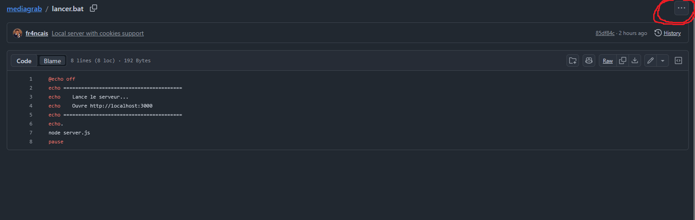
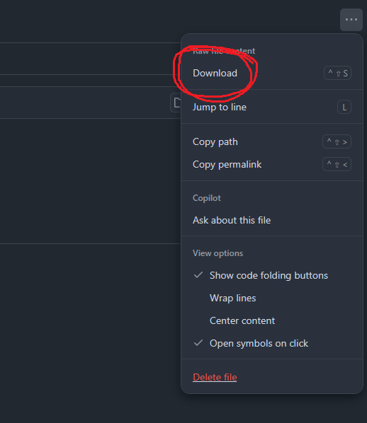
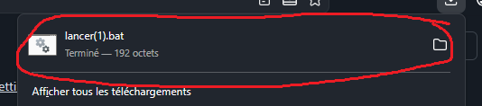
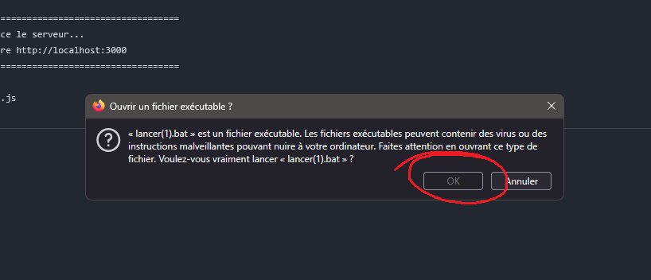

Download YouTube videos as MP3, MP4, or images
Click on lancer.bat then click the 3 dots menu (top right) and select Download


Open lancer.bat and click OK when the security warning appears


A terminal window will open. Then go to http://localhost:3000 in your browser. Paste a YouTube link, choose MP3/MP4/Image and click Download!